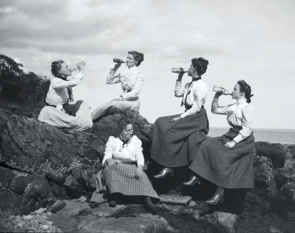
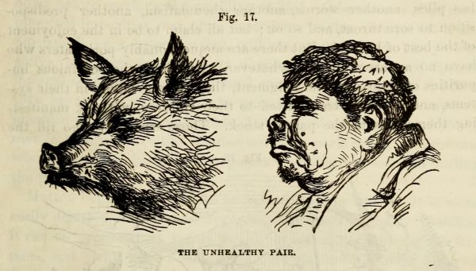

Featured Stories
Theresa Babb's Photographs of Friendship (ca. 1898)

In The Social Sex: A History of Female Friendship, Marilyn Yalom describes the rise of the “new woman” in the late-nineteenth century, whose education, race, and class position created “a new model of friendship” that was “to last for much of the twentieth century”. She quotes a woman interviewed during this rise: “We live for our friends, and at bottom for no other reason.” Babb's portraits do not fall neatly into this history, but certainly share the quoted sentiment.
The groups of women she photographed are neither fully focused on the ennobling, moral uplift associated with “the serious New Woman” nor anticipatory of the “carefree flapper” that was to follow.
Instead, we find joyful depictions of friendship among women, often on countryside outings, during a decade in US history remembered as “the gay nineties”. In the image above, Babb and three friends drink, heads thrown back, while lounging on a rocky shore.
A fifth woman stares off toward the water, either comically posed in feigned disapproval or simply lost in thought. Several other images continue the theme, reflecting the pleasures of posing in groups.
In a photograph captioned “Camping crowd at Ogier Point”, four women lean on each other, pulling faces for the camera; another image depicts friends and family of Babbs stacked on a ladder, with her sister, Grace Parker, on top.
Want to hear the rest of the story? Come join us on Thursday, January 27th, 2026 at 5PM!
Uncommon Sense: Edward B. Foote's Plain Home Talk (1896 edition)

The book's many etchings capture the physical effects of unhealthy habits and bad customs. Melancholy appears as a man with a furrowed, lycanthropic brow; the unnatural separation of the sexes is embodied in “The Isolated Girl”, with dark, frowning eyes.
“The sexes cannot maintain perfect health in isolation”, Foote insists, noting that “nuns are seldom if ever vigorous looking”. Temperance is the rule in all things: in drinking alcohol, using tobacco, and even in taking medicine.
Foote's principle of moderation extends to diet too. Acknowledging that “facts sustain the vegetarian”, he reserves particular disapproval for eating pork. “Both man and hog are intemperate eaters, and addicted to filthy habits,” writes Foote, a parallel drawn out in the accompanying illustration.
A man and hog...similar? How? Come join us on Saturday, January 31st, 2026 at 12PM to hear more!
Short Story: Micromégas by Voltaire (1752)
This short work by Voltaire — which tells of a visit to Earth by Micromégas, an inhabitant of a distant planet which circles the star Sirius, and his companion hailing from Saturn — remains a seminal work of early science-fiction. The planet from which Micromégas has come is huge, almost 22 million times greater in circumference than that of the Earth, and Micromégas himself (whose name means "Smallbig") is sized to match, coming in at a modest 120,000 feet (37 km) tall.
Micromégas is travelling the Universe after running into a spot of bother on his home planet — embroiled in a controversy which had him banished from the court for 800 years (to give a sense of scale, the lifespan of a Sirian is around 10.5 million years).
His crime? Heresy, for writing a scientific treatise on the insects of his planet (which, at 100 feet long, are too small to be seen by ordinary microscopes). During his interstellar jaunt he lands upon Saturn, and befriends the secretary of the Academy, a relative "dwarf" (only 6000 ft high) compared to Micromégas.
After an entertaining comparison of their two planets, they decide to travel onward together to Earth. At first they don't believe the minuscule beings they are seeing can possibly be big enough to be intelligent, but soon are listening to them speak with the help of a special hearing tube fashioned from fingernail clippings.
Picking up the language quickly the two giant aliens begin to converse with the humans and discover them to be more intelligent than first thought.
They learn of many philosophers, from Aristotle to Locke, including Aquinas' theory that the universe was made solely for mankind, to which they "nearly fell over with that inextinguishable laughter which, according to Homer, is shared with the gods."
The story ends with the Sirian pledging to write a book for the humans that will explain "the point of everything". When the volume is presented to the Academy of Science in Paris, the secretary opens the book only to see "nothing but blank pages".